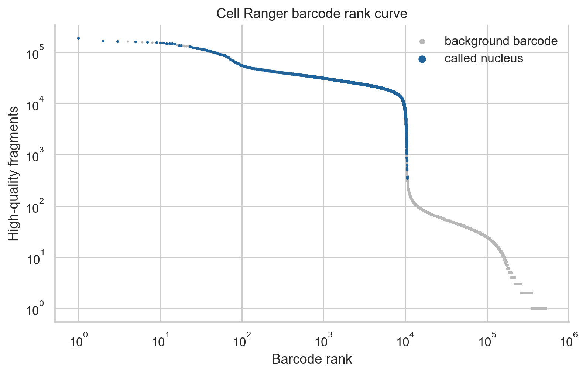
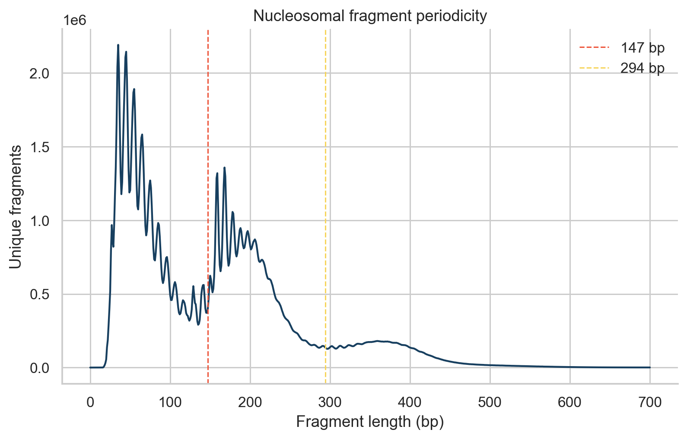
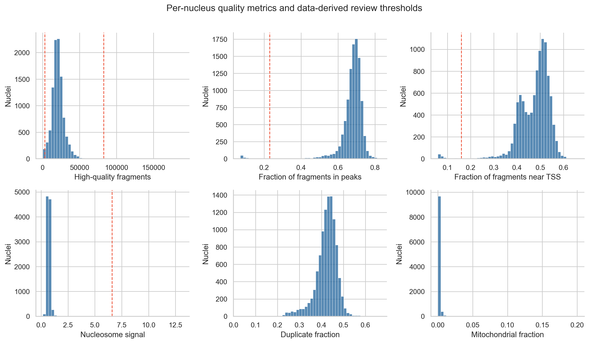
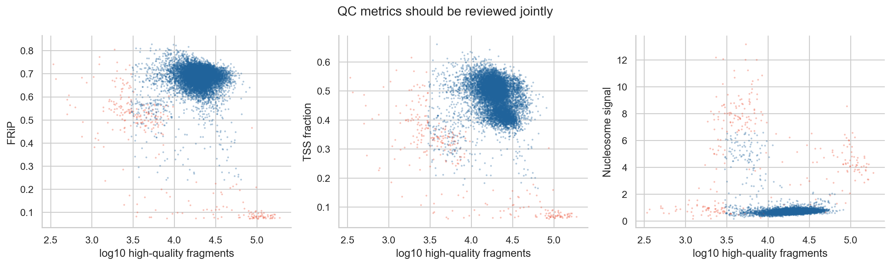
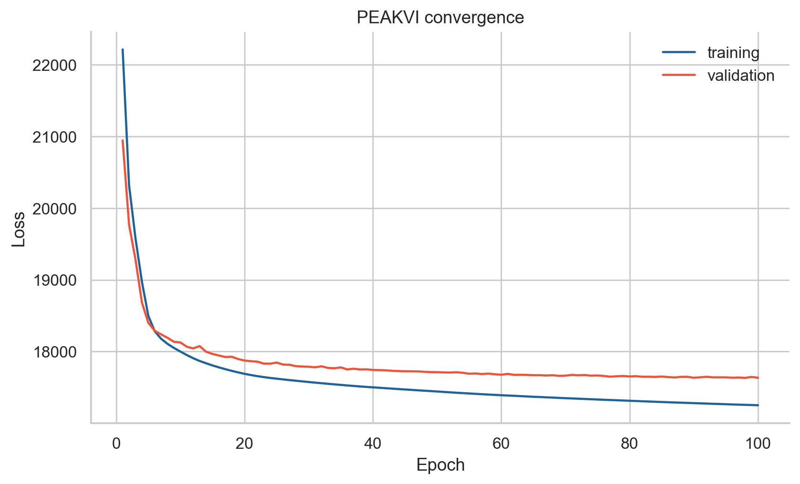
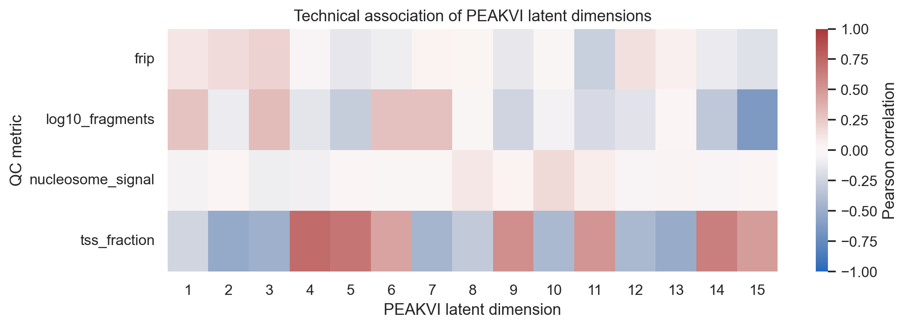
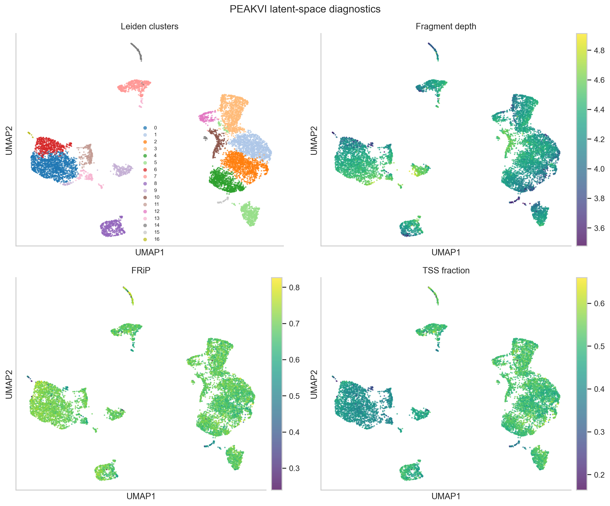
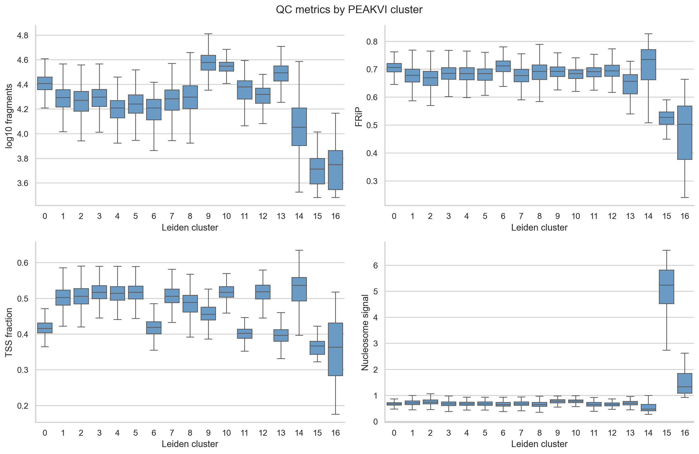
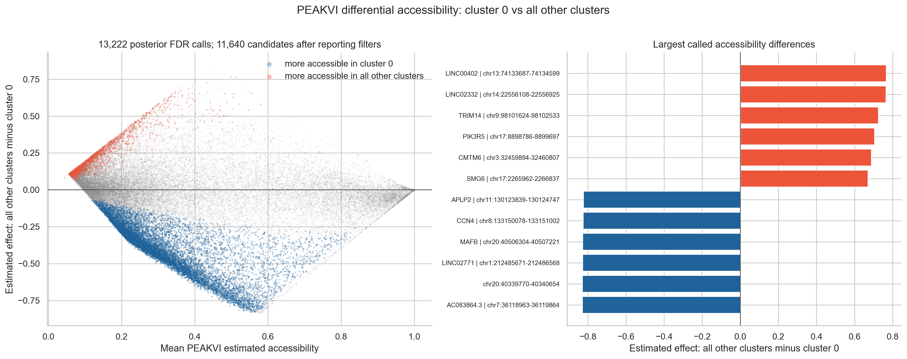

Single-cell ATAC-seq analysis with PEAKVI
This tutorial analyzes the public 10x Genomics 10k Human PBMCs, ATAC v2, Chromium X dataset. It starts from Cell Ranger ATAC output, performs fragment-level and per-nucleus quality control, trains PEAKVI, and evaluates the resulting latent space with UMAP, Leiden clustering, technical covariates, and a cluster-associated accessibility example.
The tutorial focuses on scATAC quality control, PEAKVI training, latent-space diagnostics, UMAP, and unsupervised clustering. It then uses the fitted PEAKVI model to call candidate marker peaks for one quality-reviewed cluster.
The fully rendered notebook and reproducibility files are available here:
Learning objectives
By the end of this tutorial, you should be able to:
identify the Cell Ranger ATAC files used for secondary analysis;
interpret barcode rank, fragment periodicity, FRiP, TSS-associated fragments, nucleosome signal, duplicate fraction, and mitochondrial fraction;
create and report QC flags from the observed dataset;
preserve raw peak counts in an AnnData layer;
select a peak feature set for a teaching-scale PEAKVI model;
train, save, and reload PEAKVI;
construct a neighbor graph, UMAP, and Leiden clusters from
X_peakvi;audit the latent space and clusters for residual technical structure;
call and interpret candidate cluster-associated accessible peaks.
Dataset and inputs
The example contains 10,273 nuclei from one healthy PBMC donor. Libraries were generated with 10x Single Cell ATAC v2 chemistry and analyzed with Cell Ranger ATAC 2.1.0 against GRCh38. The dataset is distributed under CC BY 4.0.
The workflow uses:
filtered_peak_bc_matrix.h5Peak-by-barcode counts for called nuclei.
singlecell.csvPer-barcode Cell Ranger counts and cell-calling status. It includes background barcodes, so it can reconstruct a barcode-rank curve.
peak_annotation.tsvPositional peak annotations supplied by 10x. These are descriptive and do not establish regulatory peak-to-gene relationships.
fragments.tsv.gzandfragments.tsv.gz.tbiBarcoded fragments and their Tabix index. The fragment file is approximately 2.3 GB and is used to calculate fragment periodicity and nucleosome signal.
The 10x fragment specification is documented in the Cell Ranger ATAC fragment guide.
Environment and data download
Create the environment and download the public inputs:
cd source/epigenomics/scatac_tutorial
conda env create -f environment.yml
conda activate gencore-scatac-peakvi
scripts/download_data.sh
scripts/prepare_fragment_metrics.sh
The raw downloads and trained model are ignored by Git. The notebook, scripts, environment, and rendered figures remain versioned.
1. Review cell calling and fragment structure
Cell Ranger calls nuclei from the number of high-quality fragments associated with each barcode. A barcode-rank plot helps reveal whether called nuclei form a clear signal-rich population above the background.

Barcode rank based on high-quality fragments. The matrix contains only the
called nuclei, while singlecell.csv also contains background barcodes.
ATAC fragment sizes should show a nucleosome-free component and periodic mono- and di-nucleosomal structure. The included preprocessing script streams the fragment file and records the distribution without expanding it on disk.

Fragment lengths for called nuclei. Dashed lines mark 147 and 294 base pairs, which are used to summarize nucleosome-free and mononucleosomal fragments.
2. Calculate and interpret per-nucleus QC
The tutorial reviews these metrics jointly:
High-quality fragments: usable fragments passing Cell Ranger filters.
FRiP: peak-region fragments divided by high-quality fragments.
TSS fraction: fragments assigned near annotated transcription start sites divided by high-quality fragments.
Nucleosome signal: mononucleosomal fragments divided by nucleosome-free fragments.
Duplicate fraction: duplicate reads divided by total reads.
Mitochondrial fraction: mitochondrial reads divided by total reads.
Warning
tss_fraction is not the standard aggregate TSS enrichment score. The
latter is calculated from a TSS-centered insertion profile. The names and
formulas of QC metrics must be reported precisely.
The example uses the observed lower 1 percent tails of fragment count, FRiP, and TSS fraction; the upper 0.5 percent tail of fragment count; and the upper 1 percent tail of nucleosome signal as review thresholds. These are dataset-specific starting points, not universal biological cutoffs.

QC distributions. Dashed lines show the thresholds calculated from this dataset.

Joint review of QC metrics. Flagged nuclei are shown in red. A nucleus can fail more than one criterion.
QC flags are retained in adata.obs before filtering:
thresholds = choose_qc_thresholds(adata)
add_qc_flags(adata, thresholds)
adata.obs[
["passed_filters", "frip", "tss_fraction", "nucleosome_signal",
"qc_pass", "qc_reason"]
].head()
This preserves the decision trail and makes before-and-after comparisons possible. Avoid deleting cells as soon as one metric is calculated.
3. Prepare a peak matrix for PEAKVI
The example keeps nuclei passing all tutorial flags and peaks detected in at least 20 retained nuclei. For the rendered CPU example, it then keeps the 50,000 peaks with the largest binary accessibility variance.
peakvi_adata = filter_for_peakvi(
adata,
min_cells_per_peak=20,
max_peaks=50_000,
)
Raw counts remain available in peakvi_adata.layers["counts"]. Feature
selection is a reported compute choice because it changes the model input. A
larger GPU analysis may retain more peaks after checking memory, convergence,
and sensitivity to the feature rule.
4. Train and save PEAKVI
PEAKVI models the probability that a genomic region is accessible in each nucleus while learning cell-level and region-level detection effects. It accepts binary or count input. This tutorial supplies unmodified Cell Ranger peak counts.
scvi.model.PEAKVI.setup_anndata(
peakvi_adata,
layer="counts",
)
model = scvi.model.PEAKVI(
peakvi_adata,
n_latent=15,
)
model.train(
max_epochs=100,
early_stopping=True,
accelerator="cpu",
devices=1,
batch_size=128,
)
model.save("results/models/peakvi_pbmc", overwrite=True)
peakvi_adata.obsm["X_peakvi"] = model.get_latent_representation()
PEAKVI is substantially faster on a GPU. The official scvi-tools PEAKVI guide should be checked for current API and hardware guidance.

PEAKVI convergence on the filtered PBMC peak matrix. Training loss alone does not establish that the representation is biologically meaningful.
5. Audit the latent representation
After training, correlate every latent dimension with technical metrics. This step asks whether a dimension still mainly follows fragment depth or another QC feature.
correlations = latent_qc_correlations(peakvi_adata)
correlations.sort_values(
"correlation",
key=lambda values: values.abs(),
ascending=False,
).head()

Pearson correlations between each PEAKVI dimension and four technical summaries. Large correlations should be investigated before downstream interpretation.
6. Build UMAP and Leiden clusters
The neighbor graph, UMAP, and Leiden clusters are calculated from
X_peakvi:
sc.pp.neighbors(
peakvi_adata,
use_rep="X_peakvi",
n_neighbors=30,
metric="cosine",
)
sc.tl.umap(peakvi_adata, min_dist=0.25, random_state=17)
sc.tl.leiden(
peakvi_adata,
resolution=0.6,
key_added="leiden_peakvi",
random_state=17,
)

The same PEAKVI UMAP colored by Leiden cluster, fragment depth, FRiP, and TSS fraction. This diagnostic makes technical gradients visible.

QC metrics by cluster. A cluster dominated by a technical tail should be investigated before it is treated as biological.
7. Call candidate cluster-associated accessible peaks
PEAKVI can compare its estimated accessibility probabilities between groups at individual peaks. The rendered example compares cluster 0, the largest cluster after per-nucleus QC and review of the diagnostics above, with all other retained nuclei.
da_results = model.differential_accessibility(
adata=peakvi_adata,
groupby="leiden_peakvi",
group1=["0"],
group2=None,
mode="change",
delta=0.05,
fdr_target=0.05,
batch_correction=False,
use_permutation=False,
n_samples_overall=5_000,
silent=True,
)
is_da_fdr is PEAKVI’s posterior expected-FDR classification. It is not a
donor-replicated frequentist test. In the scvi-tools implementation used here,
delta is applied to a posterior log2 accessibility change calculated with
an estimated pseudocount. It is not an absolute five-percentage-point cutoff.
The returned effect_size is a separate absolute probability difference:
estimated accessibility in the comparison group minus accessibility in the
target group. A negative effect therefore indicates greater accessibility in
cluster 0.
The rendered comparison uses 5,000 posterior samples. At 50,000 peaks this can require several gigabytes of memory. A smaller setting such as 500 is useful for a quick preview, but thresholded calls can change and final results should use the documented full setting.
For the compact teaching table, the workflow additionally requires an estimated effect of at least 0.10 toward cluster 0, an empirical effect of at least 0.05 in the same direction, and empirical detection in at least 5 percent of cluster 0 nuclei. These are transparent reporting filters rather than part of PEAKVI’s expected-FDR calculation.

PEAKVI estimated accessibility differences for the 50,000 tested peaks. Among the posterior expected-FDR calls, blue points are more accessible in cluster 0 and orange points are more accessible in the other clusters. Noncalled peaks are gray. The second panel shows peaks with the largest estimated differences.
The nearest-gene field supplied by 10x is included to help inspect results. It is a positional annotation and does not demonstrate that a peak regulates that gene.
The reference group is a heterogeneous mixture and includes clusters 15 and 16, whose QC profiles warrant further review. The marker list is therefore specific to this contrast and should be checked in a sensitivity analysis that excludes technically concerning clusters before biological interpretation.
Stopping point and limitations
The output is a QC-audited PEAKVI representation and unsupervised clusters, plus candidate cluster-associated accessible peaks. Cluster numbers are not cell types, and biological annotation requires additional evidence.
In the rendered run, clusters 15 and 16 are the two smallest groups and have lower fragment depth, FRiP, and TSS fraction than the main groups. Cluster 15 also has an unusually high nucleosome signal. These groups remain visible to show why QC must be repeated after representation learning. They are candidates for a documented filtering sensitivity analysis before cell-type annotation, not evidence of rare biological populations by themselves.
This dataset contains one donor. It can demonstrate QC, representation learning, and descriptive marker accessibility within this sample. It cannot estimate biological batch effects or support donor-level or condition-level differential accessibility. Cells are not independent biological replicates. Condition comparisons require independent donors and a sample-aware method, such as cell-type-specific pseudobulk analysis.
Common pitfalls
Copying fixed QC thresholds from another tissue or chemistry.
Treating a Cell Ranger cell call as a complete QC decision.
Calling
tss_fractiona TSS enrichment score.Removing rare nuclei because their distributions differ from abundant cells.
Forgetting to record peak filtering and feature selection.
Treating UMAP distances as quantitative effect sizes.
Naming clusters as cell types without marker or reference evidence.
Treating cluster-associated peaks as condition-level inference.
Forgetting that clustering and marker discovery use the same selected peak matrix and are therefore partly circular.
Treating a nearest-gene annotation as a validated regulatory relationship.
Assuming model convergence removes all technical structure.
Running a large PEAKVI model on a CPU without planning runtime and memory.
References
Ashuach T, Reidenbach DA, Gayoso A, Yosef N. PeakVI: a deep generative model for single-cell chromatin accessibility analysis. Cell Reports Methods 2022. doi:10.1016/j.crmeth.2022.100182.
Gayoso A and colleagues. A Python library for probabilistic analysis of single-cell omics data. Nature Biotechnology 2022. doi:10.1038/s41587-021-01206-w.
10x Genomics. 10k Human PBMCs, ATAC v2, Chromium X, Cell Ranger ATAC 2.1.0, published March 29, 2022.
Best practices for differential accessibility analysis in single-cell epigenomics. Nature Communications 2024. doi:10.1038/s41467-024-53089-5.